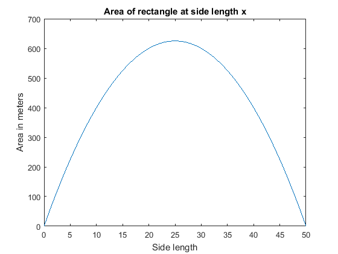

clear
clc
x=linspace(0,50,1000);
P=100;
A=x.*(50-x);
plot(x,A);
xlabel("Side length");
ylabel("Area in meters");
title("Area of rectangle at side length x");
[A_max,locs]=findpeaks(A);
x_locs=x(locs);
fprintf('Maximum area is %f square meters \n', A_max);
fprintf('Length of the rectangle is %f meters \n', x_locs);
width = 50 - x_locs;
fprintf('Width of the rectangle is %f meters \n', width);
Maximum area is 624.999374 square meters
Length of the rectangle is 24.974975 meters
Width of the rectangle is 25.025025 meters
